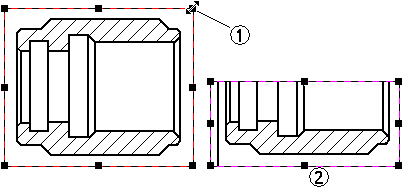
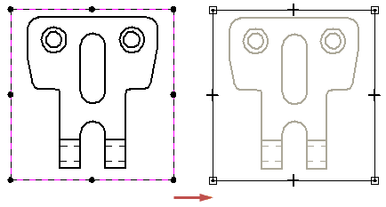
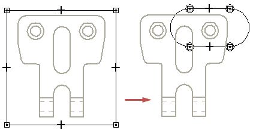

Drawing view cropping
If you want to show only part of a drawing view, you can crop it. To do this, you draw a boundary to enclose the portion of the view that you want to keep, and then crop away the portion outside of the boundary. Cropping does not change the drawing view scale. Rather, it limits the portion of the view that is displayed on the drawing sheet.

You can crop any type of drawing view except a detail view. After you create a cropped view, you can specify whether cropping edges are displayed and what edge style is used.
There are two types of cropping boundaries you can define:
-
A rectangular cropping boundary.
-
A custom cropping boundary.
Rectangular cropping boundary
To crop a drawing view by resizing the original cropping boundary, first select it to display its border. Then drag one of the border's handles (1) until only the geometry you want to see is visible (2).

Custom cropping boundary
You can use the Modify Drawing View Boundary option on the Drawing View Selection command bar to draw a non-rectangular cropping boundary.
When you click the Modify Drawing View Boundary button on the command bar, the drawing view is displayed in a special cropping window. The rectangular boundary is converted to four endpoint connected line segments.

You can use the 2D drawing tools to redraw the view cropping border. You can use any combination of lines, arcs, and curves to define the cropping boundary profile. However, the new cropping boundary profile must be closed. To use a portion of the existing rectangular boundary in the custom profile, draw 2D elements that connect to the existing line segments. Use the Trim command to remove the unneeded line segments.
To draw a new boundary profile, delete all the existing line segments and then draw the new boundary using the 2D drawing tools.

When you have finished drawing the custom boundary, you can click the Close Cropping Boundary button on the Home tab to exit the cropping window.
For more information, see Help topic: Example: Modify a drawing view cropping boundary.
Displaying cropping edges
When you crop a drawing view, you can use the Show boundary edges check box on the Annotation page (Drawing View Properties dialog box) to specify whether edges are displayed where the drawing view boundary intersects the model.
-
When the check box is selected, the cropping boundary is displayed using a thin-line style. You can set the style using the Boundary edges style list.
-
When the check box is deselected, no cropping boundary edges are displayed.
Edges are not generated where the boundary passes over holes or voids in the model.

Uncropping a drawing view
You can return a cropped drawing view to its original display using the Uncrop command on the shortcut menu.
How do I
Crop a drawing viewExample: Modify a drawing view cropping boundary